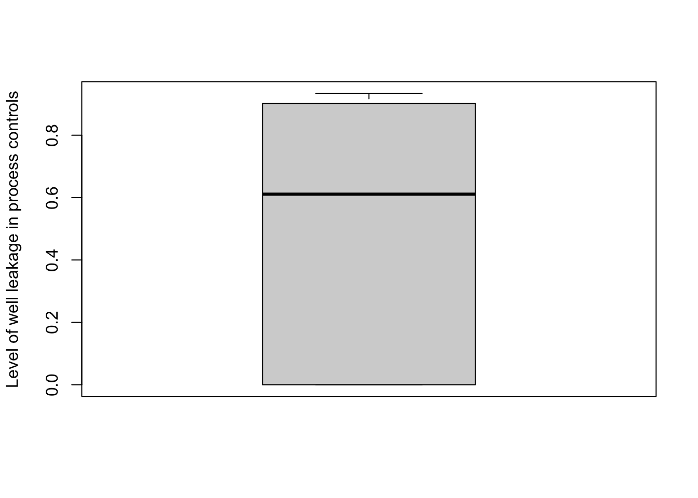

SCRuB R Tutorial

In this tutorial, we demonstrate how SCRuB should be used to remove contamination from microbial samples. All you need to run SCRuB is a count matrix of control and non-control samples. To run the SCRuB with its full spatial component, which is strongly recommended, the well locations of each sample must also be provided.
Getting ready
We start by loading the necessary packages, such as
SCRUB. We also include the use of tidyverse
within our tutorial
set.seed(1)
library(SCRuB)The primary input for SCRuB is a matrix, in which each row represents a sample, and each column represents each sample’s read counts that correspond to a certain taxa (e.g ASV, OTU, species). In general, we recommend to run SCRuB on the most granular version of the data possible (e.g., ASV, OTU, mOTU), and so data should only be grouped to higher orders of phylogeny (e.g. genus, family…) after completing the SCRuB pipeline.
Within this tutorial, we use processed samples publicly available from Qiita, from a dataset of plasma samples, made public by Poore et al. In the ensuing code, we demonstrate how SCRuB can be used to remove contamination from these plasma samples using control samples and publicly available metadata provided by the authors.
Inputs
The required inputs to SCRuB are composed of one count matrix, and one metadata matrix (or data frame):
- data - An (
n_samples+n_controls) xn_taxacount matrix, wheren_samplesis the number of samples,n_controlsis the number of negative controls, andn_taxais the number of features in the count matrix. Row names are the sample ids. Column names are the taxa ids. Every consecutive column contains read counts for each sample. Note that this order must be respected.
Alternatively, SCRuB supports inputs as 1) a biom object, which
contains the x n_taxa x ( n_samples +
n_controls ) read count matrix; if no metadata input is
specified directly in the function call, SCRuB will check
for a metadata table within the biom object; 2) a character
input specifying the path to a file where the data object is stored;
SCRuB supports .biom, .tsv, and
.csv files.
count matrix (first 4 rows and columns):
data <- read.csv('plasma_data.csv', row.names=1) %>% as.matrix()
data[30:42, 20:24]## G000005845 G000006275 G000006335 G000006355 G000006405
## 12692.150171 0 0 0 0 0
## 12692.150178 1 0 0 0 1
## 12692.150182 0 0 0 1 0
## 12692.150186 0 0 0 0 5
## 12692.150199 0 0 0 0 0
## 12692.150209 0 0 0 0 0
## 12692.150215 0 0 0 6 0
## 12692.150224 0 0 0 0 0
## 12692.150229 45 0 0 0 0
## 12692.150230 0 0 0 0 0
## 12692.150238 1 0 0 0 0
## 12692.150242 3 0 0 0 1
## 12692.Control.1 9 0 0 0 3- metadata - (n_samples + n_controls x 2, or (n_samples + n_controls x 3. The columns must be ordered as described below, with the third column being optional. The three columns are 1) a boolean indicator identifying which entries correspond to control samples; 2) a string column denoting the types of control samples; and (optionally) 3) the plate location of each sample.
Alternatively, SCRuB will accept a character path to a
.csv or .tsv file containing the metadata.
metadata <- read.csv('plasma_metadata.csv', row.names=1)
metadata[30:42,]## is_control sample_type sample_well
## 12692.150171 FALSE plasma F22
## 12692.150178 FALSE plasma H22
## 12692.150182 FALSE plasma P16
## 12692.150186 FALSE plasma J22
## 12692.150199 FALSE plasma H18
## 12692.150209 FALSE plasma L22
## 12692.150215 FALSE plasma P22
## 12692.150224 FALSE plasma D14
## 12692.150229 FALSE plasma N22
## 12692.150230 FALSE plasma F14
## 12692.150238 FALSE plasma B24
## 12692.150242 FALSE plasma D24
## 12692.Control.1 TRUE control blank DNA extraction A3- (optional)
control_order - vector,
default NA. If specified, outlines the order of controls to run
decontamination in. Input as a vector, of which each element must also
be found in the metadata’s second column. If not specified, all control
types found in
metadatawill be run sequentially based on their order from that table. In thise example, our dataset includes the following types of controls:
metadata %>% filter(is_control) %>% pull(sample_type) %>% unique()## [1] "control blank DNA extraction" "control blank library prep"Based on the analysis from SCRuB’s manuscript, we recommend to perform decontamination in the order in which contaminants are introduced. In this case, this corresponds to the following control order:
control_order <- c("control blank DNA extraction", "control blank library prep")Running SCRuB
To run SCRuB, we only need to execute a single function:
scr_out <- SCRuB( data[,1:750], # temporarily shortening feature space to shorten tutorial runtime as the documentation is being developped...
metadata,
control_order = control_order
)## [1] "Incorporating the well metadata to track well-to-well leakage!"
## [1] "SCRuBbing away contamination in the control blank DNA extraction controls..."
## [1] "SCRuBbing away contamination in the control blank library prep controls..."Alternatively, SCRuB can be run using biom objects, and
by inputting the paths to the input files. The file formats for the
inputs can be found here.
scr_out <- SCRuB( 'plasma-data.biom',
'plasma_metadata.csv',
control_order = c('control blank DNA extraction', 'control blank library prep')
)## [1] "Incorporating the well metadata to track well-to-well leakage!"
## [1] "SCRuBbing away contamination in the control blank DNA extraction controls..."
## [1] "SCRuBbing away contamination in the control blank library prep controls..."Outputs
SCRuB outputs a list containing the following components:
- decontaminated_samples - an n_samples x n_taxa count matrix, representing the decontaminated taxonomic compositions. In most cases, this is what you are interested in for downstream analyses.
decontaminated_samples <- scr_out$decontaminated_samples
decontaminated_samples[30:41, 20:24]## G000005845 G000006275 G000006335 G000006355 G000006405
## 12692.150171 0 0 0 0 0
## 12692.150178 0 0 0 0 0
## 12692.150182 0 0 0 1 0
## 12692.150186 0 0 0 0 0
## 12692.150199 0 0 0 0 0
## 12692.150209 0 0 0 0 0
## 12692.150215 0 0 0 6 0
## 12692.150224 0 0 0 0 0
## 12692.150229 0 0 0 0 0
## 12692.150230 0 0 0 0 0
## 12692.150238 0 0 0 0 0
## 12692.150242 0 0 0 0 0- p - an n_samples
vector representing the estimate proportion of each observed sample that
was not contamination, as described in SCRuB’s methods. A dataset that
had no contamination would have a
pof 1s, while a dataset of entirely contamination would have apof 0.
(1 - scr_out$p) %>%
boxplot(ylab='Level of contamination')- inner_iterations - results from SCRuB’s intermediary steps, which includes one list entry per type of control. Each iteration contains:
(3.1) decontaminated_samples - a n_samples x n_taxa count matrix, representing the taxonomic composition of the samples after the specified round of decontamination.
scr_out$inner_iterations$`control blank DNA extraction`$decontaminated_samples[30:41,20:24]## G000005845 G000006275 G000006335 G000006355 G000006405
## 12692.150171 0 0 0 0 0
## 12692.150178 0 0 0 0 1
## 12692.150182 0 0 0 1 0
## 12692.150186 0 0 0 0 5
## 12692.150199 0 0 0 0 0
## 12692.150209 0 0 0 0 0
## 12692.150215 0 0 0 6 0
## 12692.150224 0 0 0 0 0
## 12692.150229 47 0 0 0 0
## 12692.150230 0 0 0 0 0
## 12692.150238 0 0 0 0 0
## 12692.150242 0 0 0 0 0(3.2) p – an n_sample vector representing the estimate proportion of each observed sample that was not contamination, based on the specified type of process control
(1 - scr_out$inner_iterations$`control blank DNA extraction`$p ) %>%
boxplot(ylab='Level of contamination')(3.3) alpha - an n_control x ( n_sample + 1 ) matrix, representing the estimated contribution of the contaminant and each sample to each control, where the (n_sample + 1)th column represents the contribution from the contamination to the control. Each row of alpha sums to 1, with each entry of the (n_sample + 1)th column being 1 means there is zero estimated well leakage, while entries close to zero would indicate there is a high level of well leakage. It is strongly recommended to incorporate the well metadata of each sample into SCRuB, as this makes it possible ot directly account for potential well leakage into negative controls, reducing the risk of wrongly removing certain species during decontamination.
In this case, SCRuB estimated a very high level of
leakage for many DNA extraction samples, with a median estimated
well-to-well leakage of 60%.
boxplot( 1 - scr_out$inner_iterations$`control blank DNA extraction`$alpha[, ncol(scr_out$inner_iterations$`control blank DNA extraction`$alpha)],
ylab='Level of well leakage in process controls')
(3.4) gamma an n_taxa vector representing the estimated relative abundance of the contamination community, as described in SCRuB’s methods.
scr_out$inner_iterations$`control blank DNA extraction`$gamma %>%
plot(ylab='Relative abundance', xlab='Different OTUs in contamination source')(3.5) loglikelihood - float. The layer-specific log-likelihood of the inputted dataset based on SCRuB’s fitted parameters.
scr_out$inner_iterations$`control blank DNA extraction`$loglikelihood## [1] -899894985